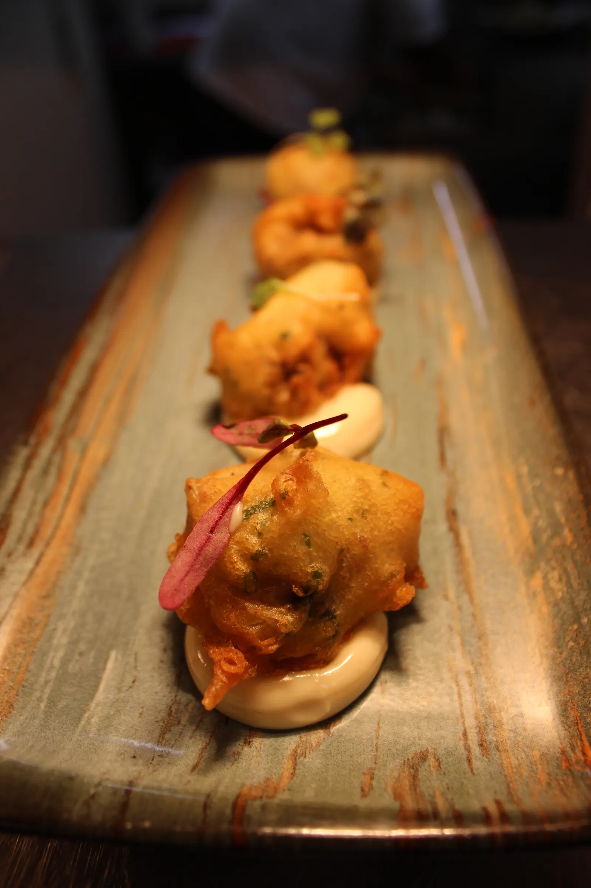
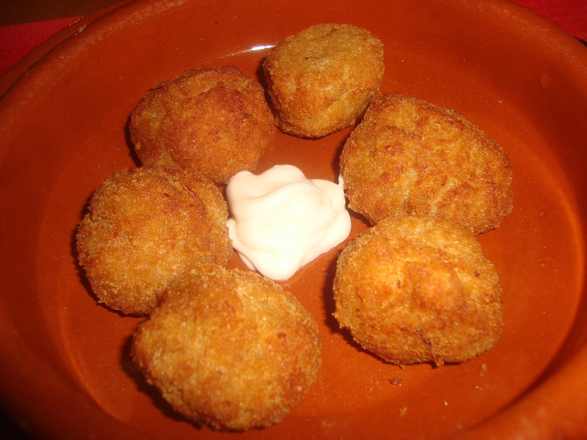
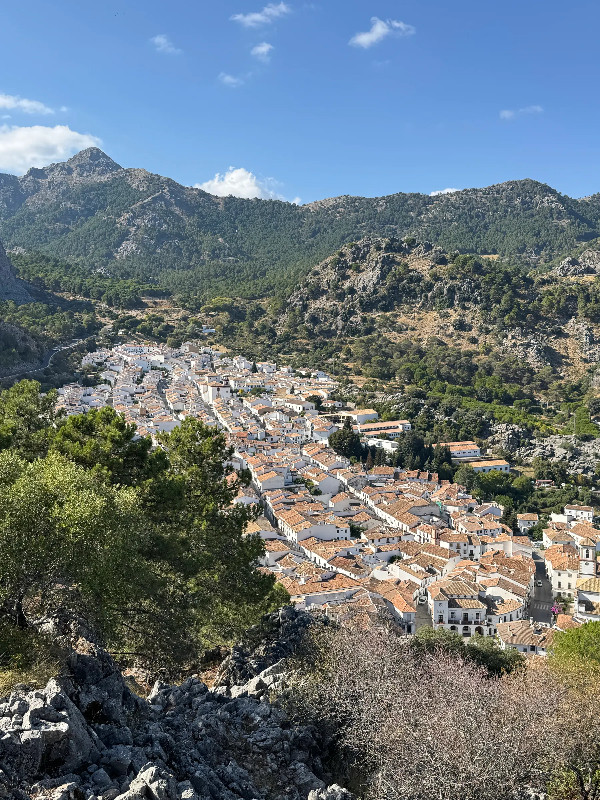
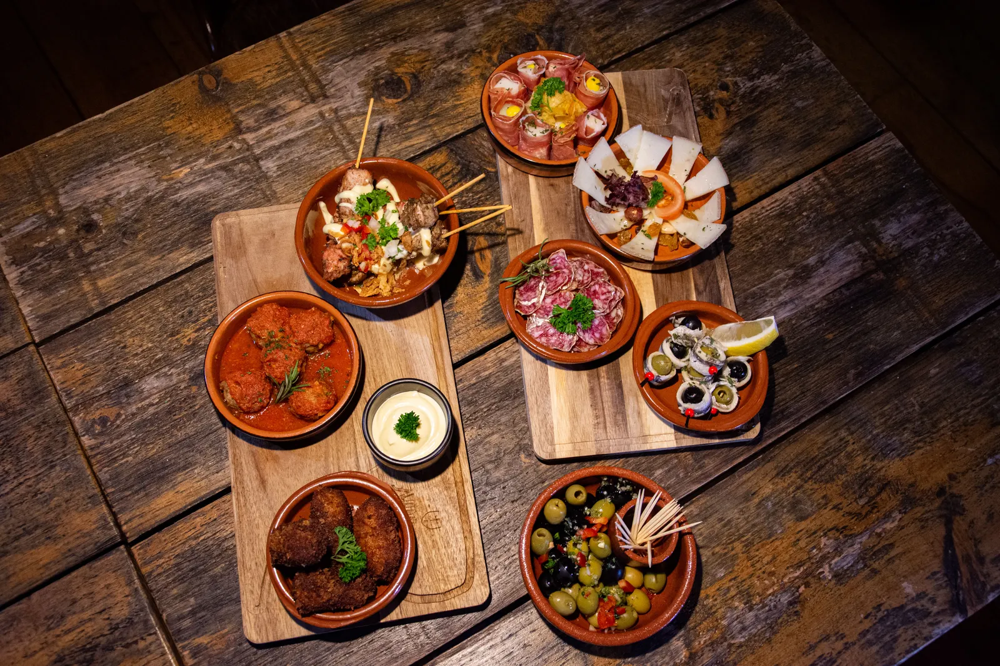
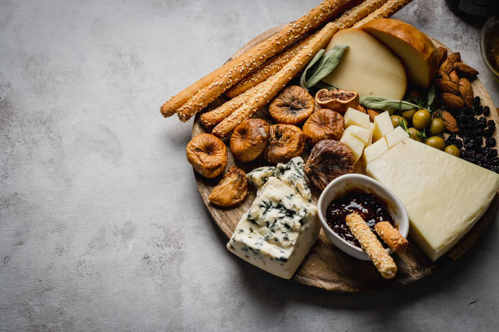
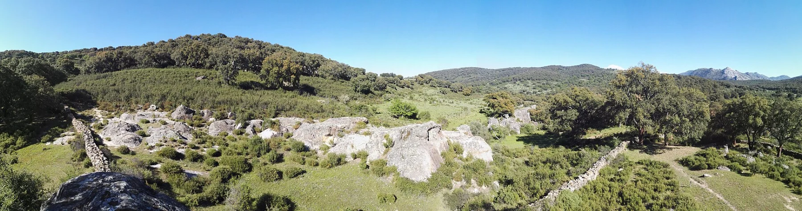
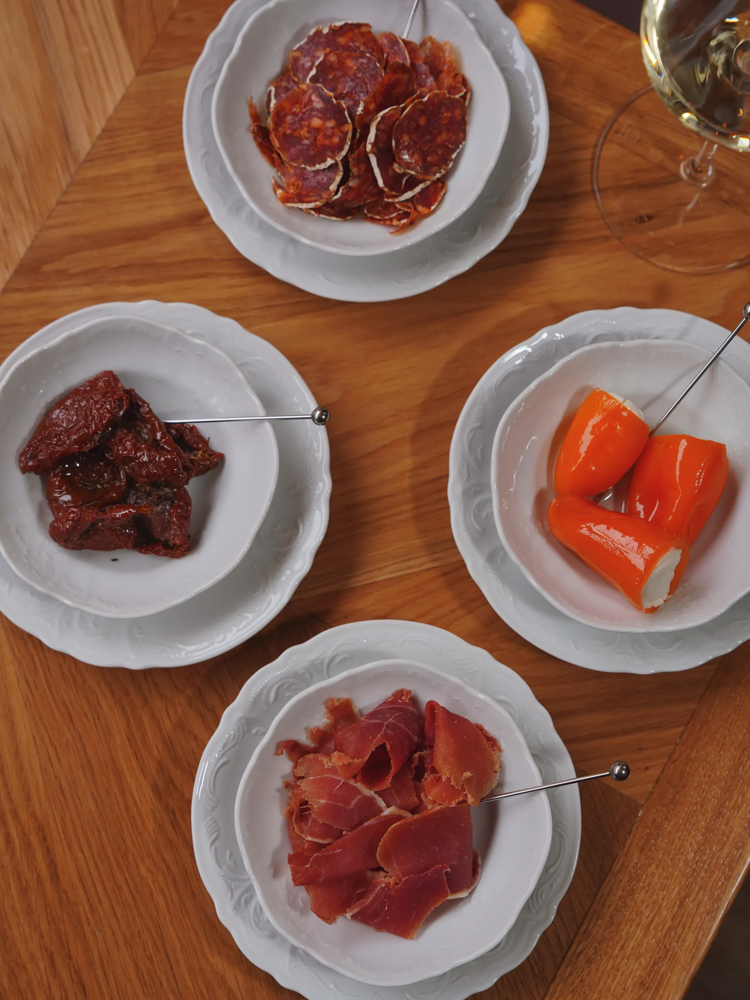
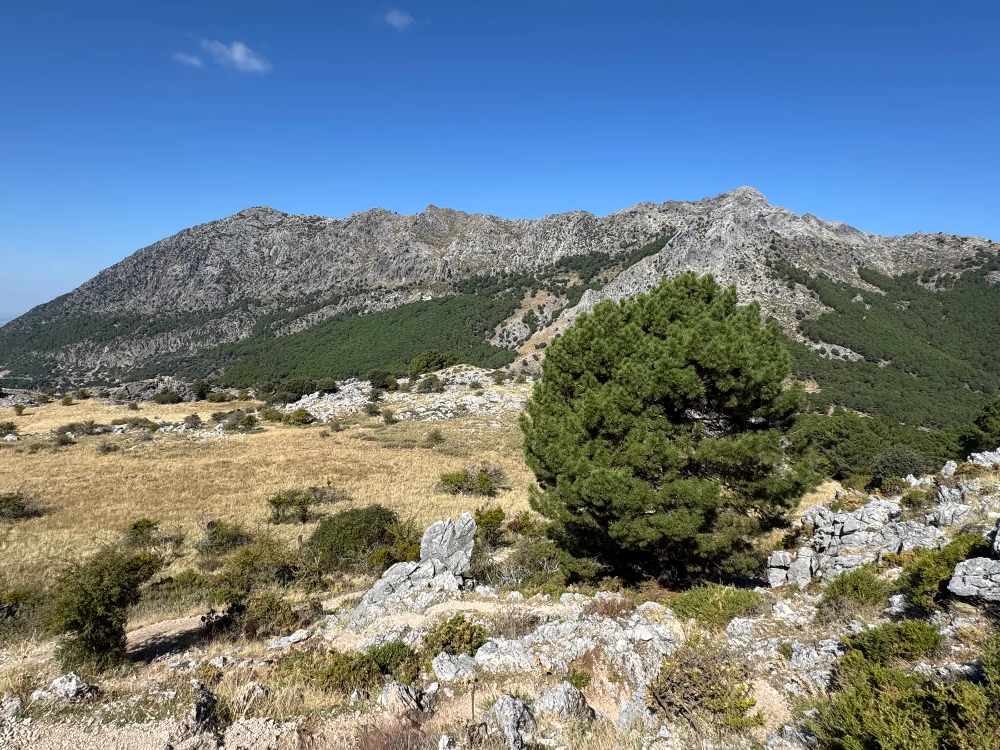

01Recetas tradicionales
Una mirada a la cocina andaluza y a esos sabores que nos resultan familiares.
EL BOSQUE · CÁDIZ
Una experiencia gastronómica para disfrutar sin prisas, rodeados de la esencia de la Sierra de Cádiz.
UN LUGAR PARA DISFRUTAR DESPACIO

EL ENCANTO DE LO SENCILLO01 / BIENVENIDOS A LA SIERRA
Hay lugares que invitan a bajar el ritmo. En el entorno de El Bosque y Prado del Rey, la naturaleza y la gastronomía andaluza ponen el escenario para una pausa alrededor de la mesa.
Restaurante Hotel Puerta del Parque es un restaurante familiar asociado a un hotel rural. Un punto de encuentro para disfrutar de los sabores tradicionales y de la esencia de la Sierra de Cádiz.
El placer de estar aquí.
02 / NUESTRA COCINA
La cocina de siempre, el gusto por compartir y una tierra que inspira cada encuentro.

01Una mirada a la cocina andaluza y a esos sabores que nos resultan familiares.

02Alrededor de una mesa, la conversación también forma parte de la experiencia.

03Tradición gastronómica y paisaje se encuentran en la Sierra de Cádiz.
¿Qué te apetece probar? Consulta los platos disponibles directamente con el restaurante.
Consultar por teléfono ↗
03 / EL ENTORNO
El entorno de la Sierra de Grazalema y Los Alcornocales invita a descubrir los paisajes y pueblos blancos de Cádiz. El Bosque es un lugar desde el que acercarse a esa Andalucía que se vive sin prisas.
Encuéntranos en la sierra ↗04 / PEQUEÑOS PLACERES
El paisaje, la mesa, la calma.


Fotografías gastronómicas representativas y paisajes reales de la zona; no son imágenes del restaurante ni de su carta. Créditos y licencias ↗
05 / NOS VEMOS EN LA MESA
Para consultar la cocina y reservar, llámanos.